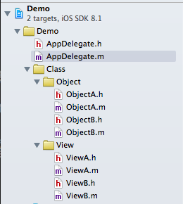
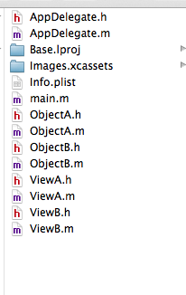
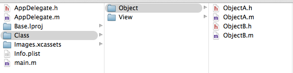
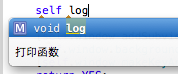

iOS代码规范 个人总结
目录
- 工程目录规范
- 代码规范
- 框架使用规范
- Xcode快捷键
工程目录规范
创建项目以后，必须注意的是将对象进行归类。
正确做法：在工程项目中创建文件夹，保证项目内目录与外部文件夹结构一致。
错误做法：创建项目之后，直接在工程中创建项目，而对象一直存储在工程目录的同级目录，导致所有资源文件全部存放在一起，难以管理。
图文说明:

上图为项目中的管理对象属性图，而项目工程文件夹的管理需要进行相应的树形结构管理。
下面则为两种不同的项目工程管理方式。
错误做法

当创建对象达到上百个时，此时工程项目中将会变得非常杂乱，这样也会导致将来想引用该工程的部分组件时，找起来非常的不便。
推荐做法

做到工程文件与文件夹结构一致，清晰明了，易于管理。
代码规范
开发项目时，应该做到的代码规范。
命名规范
命名规范推荐使用驼峰式。
注意： 请勿使用中文拼音来进行命名。
| 类型 | 格式 | 举例 |
|---|---|---|
| 类名 | 大驼峰 | NSString，NSArray，UIView |
| 变量 | 小驼峰 | string，dataArray，userInfoView |
| 函数 | 小驼峰 | - (void)addSubview:(UIView *)view; |
| 宏定义 | 全大写 | VIEW_HEIGHT，VIEW_WIDTH |
注释规范
开发过程中，注释需要好好的进行填写，特别是对函数的注释。一般情况下，源程序有效注释量必须在30%以上。
注释分为两类
- 函数注释
- 执行代码注释
注释参考
/**
* 打印函数
*/
- (void)log
{
// 打印内容
NSLog(@"Hello World");
}
可能你会问为什么这么注释呢？
如下图所示，调用的时候，函数的具体信息将会告诉调用者，清晰明了。

其他注意事项
函数解耦
- 当某一个函数内容特别庞大的时候，需要对内部功能进行拆简。
- 当多个函数有重复代码时，需要对其重复部分进行拆分。
函数如果过长，参数过多需要进行折行处理
- (void)addUsername:(NSString *)username
password:(NSString *)password;
代码缩进（一个缩进为四空格）
请一定要在正确的地方使用缩进，这样可以提高代码的可阅读行。
代码断行
代码在一行的列数请勿超过80（或100），超过需要进行断行。
提示设置
- 打开Xcode
- Command + ,
- 选择
Text Editing - 勾选
page guide at column，在后面括号填入一行最大列数
代码换行
if，while，for，需要在开始前与结束后加入换行，例如
- (void)func
{
[self run];
if (true) {
// 上下需要换行
}
[self run];
}
使用#pragma mark -
将函数归类，当实现类函数特别多的时候，可以通过一些特定的含义进行代码归类。
使用框架时，注意事项
继承框架提供的类
很多人在使用框架的时候，都会直接拿来其中的对象进行使用，其实这样对后续开发的扩展性带来了很大的影响。
因此，推荐大家最好继承要调用的对象，然后以它作为基类，然后一个项目将会有一套统一前缀的基类。
例如:
- JXModel
- JXView
- JXController
优点
- 可以对原有的类进行扩展，重写。通过这些技巧来完成原有类无法完成的一些事情。
- 添加前缀的好处是不会与一些其他的类进行重名，导致项目编译出错。
树形结构
- Class
- AppDelegate
- View
- BaseView
- Folder
- Controller
- BaseController
- Folder
- Model
- BaseModel
- Folder
- Utils
- Folder
- Category
- Folder
- Other
- Folder
Xcode快捷键
| 快捷按键 | 实现效果 |
|---|---|
Command + Shift + O |
快速打开某一个类 |
Command + Shift + up/down |
切换声明/实现文件 |
Command + Shift + F |
全局搜索 |
Command + F |
局部搜索 |